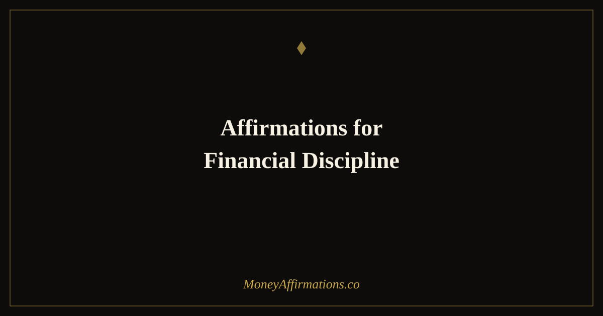

50 Affirmations for Financial Discipline to Make Consistent Money Choices

Financial discipline is not a personality type you either have or do not have. It is a skill, and like every skill, it is built through repetition rather than motivation. The problem with most approaches to financial discipline is that they treat it as an act of willpower — as if you just need to want your goals badly enough to override every impulse. But willpower is a depleting resource, and by the time the evening impulse to spend arrives, it has usually run out.
These 50 affirmations approach discipline differently. They are organized around the actual moments where financial choices happen: before a purchase, in alignment with your goals, in the face of temptation, in the small habits of daily life, and in the long vision of your future self. They reframe discipline not as punishment or deprivation but as the clearest possible expression of respect for the life you are building. Use the first group in the seconds before any spending decision. Use the others as daily anchors for the ongoing practice of financial alignment.
Financial discipline is not about restriction — it is about alignment. These affirmations reframe discipline from a punishment into a form of respect for your future self. Use the first group whenever you are about to spend; use the others as daily anchors.
What are affirmations for financial discipline?
Affirmations for financial discipline are present-tense statements that reinforce intentional spending behavior at the micro-decision level. Where budgeting affirmations address your relationship with financial planning systems, financial discipline affirmations live in the moment of actual choice — the second before you tap "buy," the hesitation in the checkout line, the evening temptation to spend for comfort. They work by building an identity around being someone who makes aligned financial choices, which research on identity-based habits suggests is far more durable than goal-based willpower. They are not meant to produce restriction or guilt, but to create a brief, powerful pause between impulse and action — the pause in which conscious choice becomes possible.
50 financial discipline affirmations
Before a purchase — the pause that creates power
- I pause before I spend and ask: does this purchase align with the financial life I am building?
- I am someone who makes deliberate financial choices, and this moment is one of them.
- I have the power to wait. Waiting is not deprivation — it is intelligence.
- I check in with my future self before I spend, and my future self guides me wisely.
- Every financial decision is a vote for the kind of life I want to live.
- I am in charge of this moment. This purchase does not have power over me.
- I breathe before I buy, and in that breath I find clarity about what I actually want.
- I spend money in alignment with my values, and my values are clear and strong.
- The pause is the practice. I am getting better at pausing every single time.
- I make this purchase with full awareness, or I do not make it. There is no in-between.
For staying aligned with your financial goals
- My financial goals are specific and meaningful, and they guide every decision I make with money.
- I know exactly what I am saving for, and that knowledge makes discipline easy rather than hard.
- Staying on track with my financial plan is one of the most loving things I do for myself.
- I am consistent with my money choices, and consistency is what creates wealth over time.
- My goals are more compelling than my impulses, and I choose my goals every time.
- I revisit my financial targets regularly because keeping them visible keeps me on track.
- I am the kind of person who follows through on their financial commitments to themselves.
- Alignment with my financial goals feels like freedom, not restriction.
- Every day I make even one aligned financial choice, I am building the life I want.
- My future self is grateful for every disciplined decision my present self makes today.
When tempted to overspend or impulse buy
- I feel the pull of this impulse and I choose not to follow it. I have that power.
- This urge to spend will pass in minutes, and my financial goals will still be here when it does.
- I do not need this thing to feel okay. I already feel okay, and this purchase is unnecessary.
- I am stronger than this moment. My discipline is real and I access it now.
- I recognize emotional spending and I choose a different response to the emotion I am feeling.
- The feeling driving this impulse is not about this purchase. I address the feeling, not the cart.
- I close the browser, put down the item, leave the store — and I feel proud of myself immediately.
- I have a 24-hour rule for anything I did not plan to buy, and I honor it now.
- Choosing not to spend here is choosing to spend on something that matters more. That is wisdom.
- I am building the evidence, one resisted impulse at a time, that I am someone in control of my money.
For daily financial habits that build wealth
- I track my spending because awareness is the foundation of every financial improvement.
- I save automatically because the best discipline systems remove the need for willpower entirely.
- My daily financial habits are small, consistent, and compounding toward a remarkable result.
- I review my finances weekly and that regular contact keeps me grounded in reality and opportunity.
- I celebrate the boring habits — the auto-transfers, the budget reviews, the skipped impulses — because they are the real wealth-builders.
- I show up for my money every day, just as I show up for everything else that matters to me.
- My financial habits are becoming automatic, which means discipline is becoming effortless.
- I invest in my financial education because what I know directly shapes what I earn and keep.
- The small financial choices I make today are creating a radically different financial life in five years.
- I am building wealth through repetition, and repetition is within my complete control.
For long-term discipline as a form of self-love
- Financial discipline is one of the most profound ways I show up for the person I am becoming.
- Every aligned money choice is an act of love toward my future self.
- I do not punish myself when I slip. I forgive quickly and return to alignment immediately.
- Discipline and joy are not opposites. I find deep satisfaction in living in alignment with my values.
- The freedom I am building through financial discipline is the most expansive kind of freedom there is.
- I am proving, one decision at a time, that I can be trusted with my own financial wellbeing.
- I take care of my financial future the same way I take care of my health — with consistency and love.
- This discipline is not who I force myself to be. It is who I am choosing to become.
- Looking back, I will see that the daily, undramatic choices were the ones that changed everything.
- I am financially disciplined, financially aware, and financially free — and all three grow together.
How to use these affirmations
The architecture of this list is designed for real-time use. Keep the first group accessible wherever you most commonly make unplanned purchases — screenshot them to your phone's camera roll if you tend to impulse-buy online, or write one on a sticky note in your wallet if your challenge is in-store. The goal is to have the affirmation available at the exact moment of decision, not as a morning practice that you hope will carry through to the evening.
The middle groups — alignment and habit — work well as part of a morning or evening routine, when there is no immediate pressure and you can let them settle into your sense of identity. Reading five affirmations from the daily habits group during your morning coffee trains your self-concept in the direction of disciplined engagement before any spending temptation arises.
The final group, on discipline as self-love, is particularly valuable after a lapse. When you have overspent or broken a financial commitment to yourself, this group provides the self-compassionate frame for returning to alignment quickly rather than spiraling into shame and abandonment of the entire financial plan.
Why willpower fails for financial discipline — and what actually works
Roy Baumeister's research on ego depletion established one of the most practically important findings in behavioral psychology: willpower is a finite resource that depletes with use across the day. Every decision — not just financial ones — draws from the same pool. By evening, when impulsive spending is statistically most common, the willpower reserve is at its lowest. This explains why financial discipline that relies purely on "trying harder" tends to fail at the end of the day rather than at the beginning.
Peter Gollwitzer's work on implementation intentions offers a dramatically more effective alternative. An implementation intention is a pre-made decision in the form "if X, then Y" — for example, "if I feel the urge to buy something I have not planned, I will wait 24 hours before purchasing." Research shows that implementation intentions are far more effective than goal-setting alone because they remove the need for in-the-moment willpower. The decision has already been made; the situation simply triggers the pre-committed response. Financial discipline affirmations function similarly: they pre-load a response to the temptation situation that the brain can retrieve before conscious reasoning has to work hard.
Katherine Milkman's research on temptation bundling — pairing a desired activity with a less-desired one — is also highly applicable. Pairing a small financial reward with a disciplined financial action (for example, allowing a modest treat after hitting a savings milestone) makes discipline intrinsically motivating rather than purely a matter of self-denial. This is entirely consistent with the affirmations in the self-love group, which frame discipline as generating pleasure and pride rather than requiring sacrifice.
Perhaps most powerful is James Clear's research on identity-based habits. People who say "I am someone who makes disciplined financial choices" — an identity statement — demonstrate far more consistent behavior over time than people who say "I am trying to be more financially disciplined" — a goal statement. The shift from aspiration to identity is exactly what the affirmations in this collection are designed to accelerate.
Tips to make them work faster
- Accessibility at decision points: Screenshot the first group and save it to your phone's home screen or camera roll. The entire point of a pre-purchase affirmation is that it is available in the actual moment of temptation — which means it needs to be findable in under five seconds.
- Identity anchoring: Choose one affirmation from the long-term group and write it somewhere you see every day — a mirror, a journal cover, a phone wallpaper. Reading it passively but repeatedly builds the identity statement into your self-concept faster than any single session of focused reading.
- The 90-second rule: When you feel an impulse to spend, commit to 90 seconds of doing nothing — not buying, not leaving the page, just waiting and reading one affirmation. Most impulses lose significant intensity within 90 seconds. You are not suppressing the desire; you are letting it pass at its own natural rate.
- Lapse recovery protocol: When you break your financial discipline, read the self-love group the same day. Do not wait. The speed of your return to alignment after a lapse is more important than the lapse itself.
- Weekly discipline review: Once a week, spend two minutes identifying one financial decision from the past seven days where you exercised discipline. Name it specifically, acknowledge it, and read one affirmation in response to it. This trains your brain to notice and reward the behavior you want to reinforce.
Frequently asked questions
How is financial discipline different from being restrictive with money?
Financial discipline is about alignment with your chosen values and goals — it is entirely self-directed. Restriction is externally imposed deprivation. Discipline says: I choose not to spend this money here because I have something more important I am building toward. Restriction says: I cannot have this. One comes from agency; the other comes from scarcity. The affirmations in this collection are written from the agency frame throughout.
What do I do when I break my financial discipline?
You acknowledge it without drama, identify what triggered the lapse, and return to your plan on the very next decision. Research on self-compassion and behavioral change consistently shows that harsh self-criticism after a lapse makes the next lapse more likely, not less. The most disciplined people are not the ones who never slip — they are the ones who recover fastest and without self-punishment.
Can affirmations help with emotional spending?
Yes — specifically the third group in this collection, "When tempted to overspend or impulse buy," is written for the moment of emotional spending temptation. The key is to have a specific affirmation ready before the emotion peaks, so it functions as an interrupt rather than a post-hoc rationalization. The "pause" affirmations in the first group are also highly effective as a one-breath intervention in the moment of temptation.
Financial discipline is ultimately the daily practice of honoring your wealth-building vision. For the larger framework of money mindset and long-term financial identity, explore our wealth affirmations collection — the foundation on which lasting financial discipline is built.